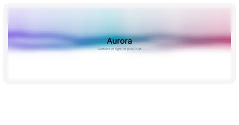
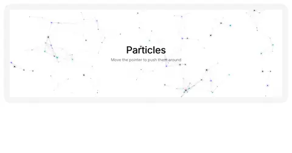
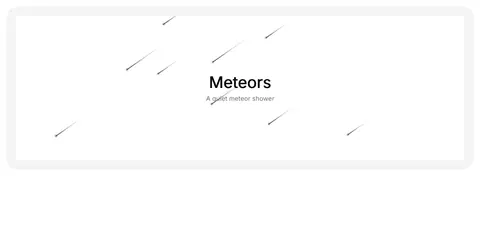
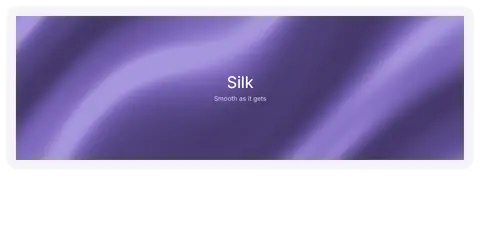
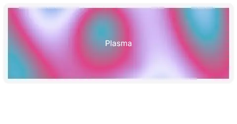

Animated backgrounds for Rust desktop apps
Full-panel animated backgrounds built from vertex-colored meshes, so they stay cheap on the GPU: aurora, silk, plasma, particles, meteors, starfields, beams, grids, waves, liquid metal and dozens more. Paint one behind any egui layout with a single call.
All Backgrounds components

Aurora
BackgroundsFlowing curtains of northern light that drift and shimmer, fading into the background.

Particles
BackgroundsDrifting particles with depth, optional constellation links and pointer repulsion.
Squares Grid
BackgroundsAn endlessly scrolling grid; the hovered square fills in and fades as you move on.
Dot Grid
BackgroundsA field of dots that bulges away from the pointer and springs back with a wobble. Click for a shockwave.
Grid Pattern
BackgroundsThin grid lines with squares fading in and out at random, a hover highlight and an optional skew.
Retro Grid
BackgroundsA perspective grid floor scrolling toward the viewer, fading at the horizon.
Flickering Grid
BackgroundsA grid of tiny squares each flickering to random opacities, like a quiet LED panel.

Meteors
BackgroundsMeteor streaks with glowing heads and fading tails falling diagonally at random speeds.
Shooting Stars
BackgroundsTwinkling stars with shooting stars streaking across every couple of seconds.
Background Beams
BackgroundsFaint curved paths sweeping across the area with pulses of colored light racing along them.
Wavy Background
BackgroundsThick, blurred ribbons of color undulating like slow ocean waves.
Waves
BackgroundsDozens of thin lines warped by flowing noise; the pointer drags them and they spring back.
Threads
BackgroundsFine threads fanning out from a bundle into flowing, rippling strands that lean toward the pointer.

Silk
BackgroundsSmooth, undulating folds of shaded silk with soft specular highlights.
Iridescence
BackgroundsAn oily, iridescent rainbow film that swirls and shifts; the pointer stirs it.
Swirl
BackgroundsPsychedelic paint swirling into a slowly spinning vortex with marbled bands.
Liquid Metal
BackgroundsRippling liquid chrome with flowing reflections; the pointer sends ripples through it.

Plasma
BackgroundsClassic demoscene plasma: interfering sine fields mapped to a glowing, looping palette.
Lightning
BackgroundsA crackling bolt with a white-hot core, wide glow and flickering branches.
Orb
BackgroundsA glowing ring of colored light with a breathing edge that ripples and spins faster on hover.
Warp Speed
BackgroundsHyperspace star streaks rushing toward the viewer. Press and hold to engage warp.

Galaxy
BackgroundsA slowly rotating spiral galaxy with a bright core and colorful arms. Stars scatter from the pointer.
Letter Glitch
BackgroundsA wall of monospace letters constantly glitching to new characters and colors, with a vignette.
Matrix Rain
BackgroundsColumns of glyphs raining down with bright heads and fading trails.
Ripple
BackgroundsConcentric circles breathing in a staggered wave, fading toward the bottom.
Spotlight
BackgroundsVolumetric light rays fanning down from above, swaying and shimmering, leaning toward the pointer.
Lamp
BackgroundsA bright bar of light widening into view and casting a fan of colored light upward.
Vortex
BackgroundsHundreds of glowing particles swirling into a vortex with short colorful trails.
Gradient Blobs
BackgroundsBig soft blobs of color drifting and blending like a lava lamp, one following the pointer.
Mesh Gradient
BackgroundsA smoothly animated four-color mesh gradient with organic swirl and distortion.
Snowfall
BackgroundsGently falling snow with depth: distant flakes small and slow, near ones big and swaying.
Grain Noise
BackgroundsAnimated film grain overlay that gives gradients an analog texture (right half).
Background Boxes
BackgroundsA skewed isometric grid of boxes that light up in random colors under the pointer.
Beams
BackgroundsTall columns of soft light with luminous texture flowing down them; rotate for a diagonal look.
Hex Grid
BackgroundsA honeycomb of hexagons with random pulses, a rolling wave of light and a pointer glow.
Liquid Ether
BackgroundsA real-time fluid simulation: moving the pointer stirs glowing eddies of color that curl, mix and slowly fade. A ghost pointer keeps it alive.
Grid Scan
BackgroundsA wireframe grid tunnel receding into the distance, swept by a glowing scan frame that lights up the lines it passes. The view leans toward the pointer.
Prismatic Burst
BackgroundsRays of rainbow light bursting from the center, rotating, flickering and breathing, with shock rings rippling outward.
Grid Motion
BackgroundsA tilted wall of tiles whose rows slide in opposite directions as the pointer moves, each with its own lag, for a deep parallax feel.
Laser Flow
BackgroundsA laser beam falls from the top and splashes across a surface, wrapped in luminous fog that curls outward and up.
Metallic Paint
BackgroundsA shape or logo filled with flowing liquid metal: rippling chrome bands, a bevelled rim and a highlight that follows the pointer.
Background Lines
BackgroundsLong flowing curves sweep across the area, drawing themselves in, lingering and erasing again, each on its own rhythm and in its own color.
Dotted Map
BackgroundsA world map drawn as a grid of dots, with glowing arcs flying between cities one after another and markers rippling where they land.
Meta Balls
BackgroundsOrganic blobs that merge and split like liquid, colored by the dominant blob; one follows the pointer.
Ball Pit
BackgroundsGlossy balls with gravity, collisions and bounce; the pointer shoves them around and an invisible hand stirs them when idle.
Ripple Grid
BackgroundsGrid lines rippling with waves from the center and the pointer, crests lit in the accent color.
Dark Veil
BackgroundsA dark, slowly flowing veil of tinted light, like light through smoke.
Color Bends
BackgroundsBands of vivid color that bend and flow, leaning toward the pointer.
Gradient Blinds
BackgroundsVenetian-blind slats of flowing gradient, each lit across its width, with a spotlight that follows the pointer.
Pixel Blast / Dither
BackgroundsAnimated noise or waves quantized with a 4x4 Bayer ordered dither into pixels, dots or diamonds; ripples burst from the pointer.
Faulty Terminal
BackgroundsA glitchy green CRT: flickering glyphs under a brightness wave, scanlines, rolling interference and row glitches.
Fluted Glass
BackgroundsA picture behind reeded glass: each rib is its own lens holding a squeezed slice of the image, smeared into spikes, bending harder near the pointer.
Halftone Logo
BackgroundsA logo built from a rotated halftone dot screen with a wave of ink rolling through the dots.
Warp Grid
BackgroundsA fine grid that bends into a gravity well around a dark sphere under the pointer, glowing where it is pulled hardest.
Tornado
BackgroundsA strand vortex: hundreds of helical lines pinch into a waist and flare into a swirling floor, with motes and comets riding the funnel; the pointer parts the strands.
Accretion Disc
BackgroundsA black hole: thousands of particles orbit an occluding core along glowing log-spiral lanes, with faint polar jets. Drag to orbit the camera.
Light Cables
BackgroundsA bundle of glowing fibre cables rising from a wide fan, folding through one bend into a bright point, with light pulses running up them; the cables lean toward the pointer.
Wire Terrain
BackgroundsAn endless flight down a wireframe valley toward a banded horizon sun, with hidden-line ridges; the pointer steers the camera.
Ribbon Glow
BackgroundsLayered ribbons of light sweep across the frame, twisting as they go and bending into a bright swirl around the pointer.
Matrix Junction
BackgroundsGlowing beams converge from every edge on a bright node that throws jittered lightning arcs toward the pointer.
Cloud Sky
BackgroundsAn animated sky: cumulus clouds drift on two parallax layers under a cirrus veil, with a low sun glow; the pointer turns the wind. Dusk palette on dark themes.
Still Sunset Meadow
BackgroundsA ground-level voxel meadow at sunset: square sun, drifting block clouds, a blocky treeline and swaying cube grass and pixel flowers with a soft out-of-focus foreground.
Glimmer Vale
BackgroundsA night meadow of rolling hills made of twinkling peach-to-violet glitter under a periwinkle sky, with blooming crests and soft daisies drifting in the foreground.